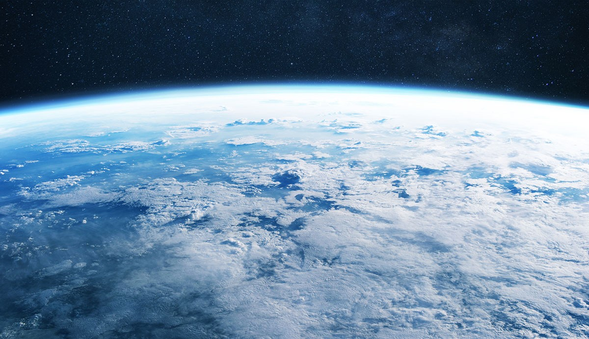
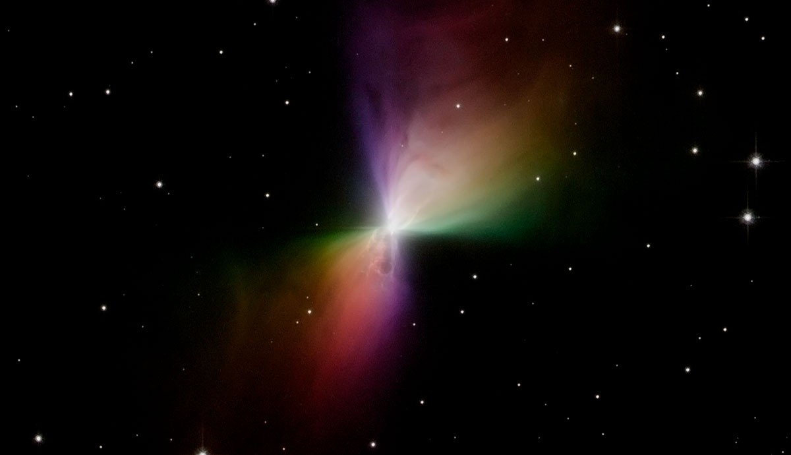
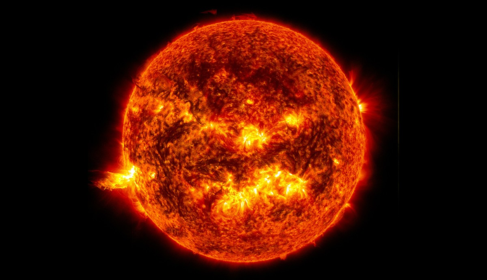
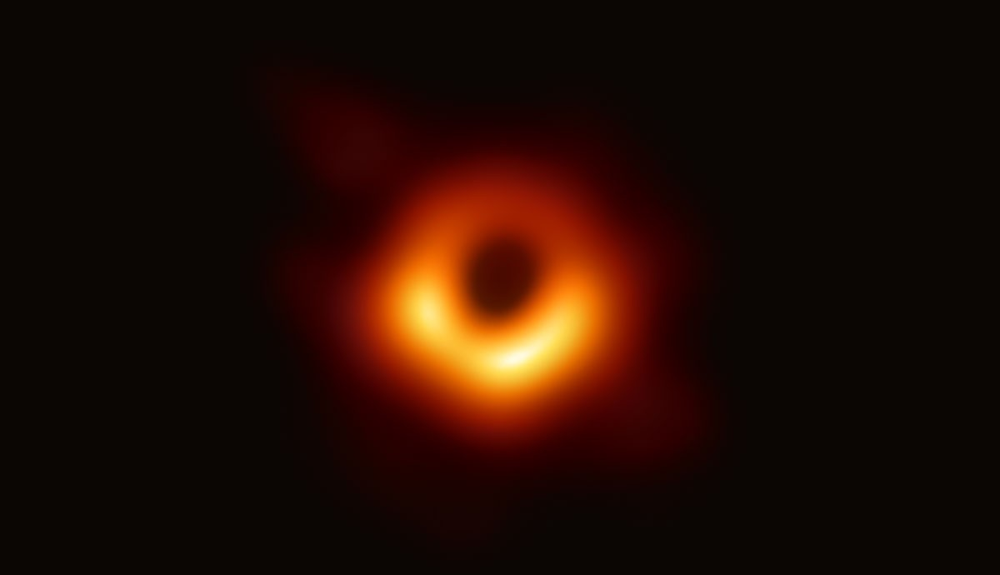
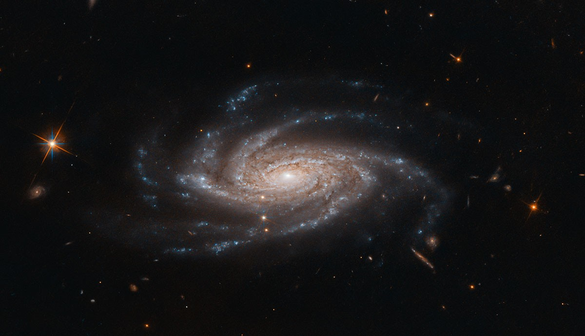
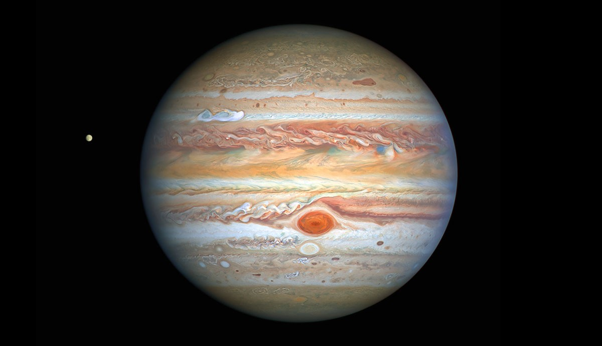
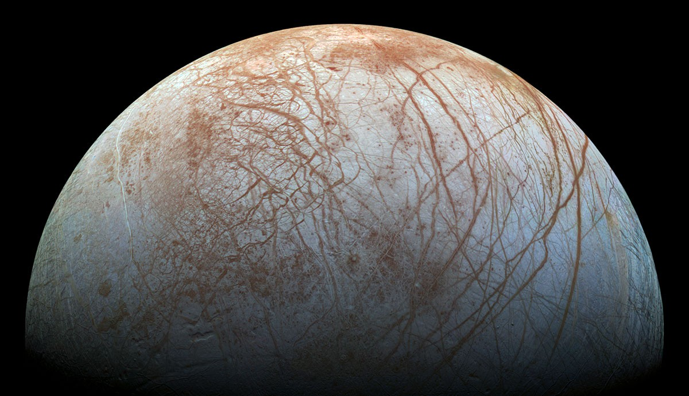

About Space
What is space and what’s floating about in it?
Scientists have discovered a lot about space,
how it works and the things in it, but there are still loads of mysteries left to solve.
Space is the vast expanse of the universe where energy and matter
stuff that takes up room and has mass – exist. So,
it’s not a totally empty void, but did you know that less than 5% of the whole universe is normal,
visible matter? That includes all the solids, liquids, gases and other tiny particles
that make up the things we can see and interact with, such as stars and planets.
While we can’t see or detect them yet, we think that
dark matter and dark energy are a huge part of the universe and how it works.
Space is full of radiation. Some of it is left over from the beginning of the universe
Cosmic microwave background (CMB) radiation tells us that our universe
is 13.8 billion years old and started with the Big Bang.
Since the Big Bang, space has been expanding, going from a single point
to the size it is now. In fact, it’s still expanding and at an accelerating rate.
We don’t know why expansion is getting faster, but scientists think it has something to do with dark energy.

Where does space begin?
For official records, we often say that outer space begins at 100 kilometres above Earth’s sea level. We call this the Kármán Line.
But there actually isn’t an exact point where the sky ends and space begins.
Instead, the higher you go, the thinner Earth’s atmosphere gets until it becomes space.
The outermost layer is called the exosphere and ends at least 10,000 kilometres from Earth.
Material spewing from the Sun provides a protective bubble around our solar system called the heliosphere. This material’s effects end at a boundary called the heliopause. Beyond this is interstellar space – the space between stars.
Light years
Space is huge! In fact, we don’t really know just how big it is.
We measure the extremely long distances between things in space by light years.
A light year is the distance that light travels in one Earth year.
Light travels at about 300,000 kilometres per second. So, one light year is about nine trillion kilometres.
Nebulae
A nebula is a cloud of dust and gas in space.
Nebulae – meaning more than one nebula – are often where new stars form as the dust and gas gets pulled together by gravity.
Dying stars can also create nebulae when they throw out their contents in the final stages of their life.
Some nebulae emit their own light while others reflect the light of nearby stars.
Dark nebulae obscure light, creating dark patches in the sky.

Stars
Stars are giant balls of superheated gas. Atoms are squeezed together at their centre creating elements and energy that’s released as light and heat.
Baby stars – called protostars – form when a nebula clumps together, collapses under its own gravity and starts to generate heat.
When protostars get hot and dense enough to cause nuclear fusion, converting hydrogen into helium, we call them main-sequence stars.
This phase can last billions of years.
Eventually stars run out of hydrogen for fuel and their core collapses under gravity.
Small stars, such as our Sun, expand from a dwarf into a red giant.
In about five billion years the Sun will engulf the planets closest to it, possibly including Earth.
Five billion years later, it’ll shrink, becoming a white dwarf that’ll cool down over billions of years.

Black holes
Black holes have extremely strong gravitational fields. Anything – matter, energy and even light – that gets too close can’t escape. This point is called the event horizon.
At the centre of a black hole is the singularity. This is where our laws of physics break down.
We can’t see black holes directly, but we can detect the gravitational waves they create or observe the light-emitting accretion disks around them.
Stellar mass black holes have masses a few times greater than our Sun. Supermassive black holes are found at the centres of galaxies and have masses millions of times greater than the Sun.

Planetary systems and galaxies
Stars have strong gravity. They attract objects such as planets, asteroids, and comets, which orbit around them.
Our solar system formed 4.6 billion years ago from a dusty disk called the solar nebula. It's just one of many planetary systems in our galaxy.
Galaxies are made of stars, dust, and gas, held together by gravity. The Milky Way is a spiral galaxy and has a supermassive black hole at its center called Sagittarius A*.

Planets
Planets must orbit a star, be nearly spherical, and have cleared their orbit of other debris.
There are eight planets in our solar system: Mercury, Venus, Earth, Mars (terrestrial), Jupiter, Saturn (gas giants), Uranus, and Neptune (ice giants).

Moons
Moons orbit planets and can vary in shape and activity. Earth’s Moon is calm, but Jupiter’s Io has over 400 active volcanoes.
Some planets have no moons, like Mercury and Venus. Saturn has over 270 moons – and counting!
